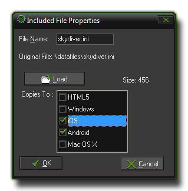

Including Files
This section deals with including external files in your game.
GameMaker:Studio is not just limited to the resources that you create within the program as it has a special section on the resource tree of the main window for Included Files. Here you can
load different file types (and even create sub-directories for them) into GameMaker:Studio and they will then be included in the final game as part of the final package for the target platform. So, for example,
in a windows game they will be bundled within the *.exe and exported when run, or in HTML5 they will be included in the html5_game folder and stored on the server.
NOTE : If you are using the Free version of GameMaker:Studio you are limited to a maximum of 5 included files per game. For more details see
here.
To add a file to your resources you must right-click on the Included Files section of the resource tree and select Create Included File or, if you want to create a sub-directory to store other files,
Create Group. This will then prompt you to add a file, or files if your select more than one, to the list. Once it has been added you can right-click on it and select "Properties" to edit the properties
of the file:

Here you can rename the file if you choose by changing the File Name. Beneath the file name there are also a series of options for the target platform that this included file should be copied to. If you
wish it to be only exported when you run the game in a browser, then you would only tick the "HTML5" box, and if you want it to be exported only to Android and iOS targets you would tick those, and so
on. If you choose not to tick any targets then that file will not be exported at all. This option is especially useful for those that wish to make use of the Configurations
Manager to store certain configurations and export specific files depending on them.
Once you click on "OK" the file will be stored with your current project in its own folder called data-files found in the project *.gmx directory. If you have chosen to change the name of the
file when you added it to the resource tree, then the file will now be stored with that new name. Please note that from now on you should edit the files stored in this folder and not the original files (unless
you plan on including them again, but generally there is no need).